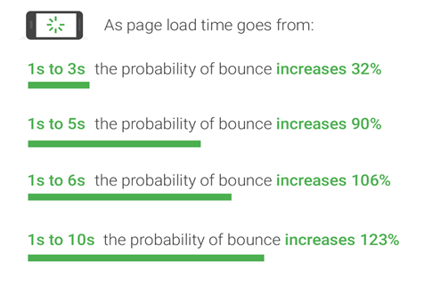

SEO is the evergreen buzzword of the online world. Even a new kid on the block knows that optimization is the recipe for SEO success. But how do you continuously optimize your site without knowing your flaws?
You can do it by tracking certain SEO metrics and re-optimizing them. Yes, let’s call it Optimization within Optimization. After all, isn’t that the name of the game, guys?
Here, we talk about the 15 KPIs you should monitor, measure, and modernize to become the King of the SEO Jungle.
1. Organic Traffic
The visits you get from search engines such as Google is organic traffic. Often, organic traffic is a result of Brand Awareness. This Key Performance Indicator (KPI) is crucial from a Search Engine Optimizer’s point of view, as displaying your website to the right audience is one of the toughest tasks in the SEO world.
The ideal way to track this metric is using the Google Analytics tool. First, log in to your Google Analytics dashboard. Select the Overview option under the Audience tab. Click ‘Add Segment’ and select the ‘Organic Traffic’ option, and voila!
2. Bounce Rate
Bounce Rate is the percentage of visitors who leave your website after viewing only one page. Generally speaking, the lower the Bounce Rate is, the better your website SEO.
If your bounce rate is anywhere between 40-60%, you are good to go. However, if the rate exceeds the 60%-mark, you may have to rework your SEO game. Bounce rate tells you that your page may not be highly relevant to the concerned query since the users exit your site without performing any action or whatsoever.
Google Analytics calculates Bounce Rate by dividing the number of non-interactive sessions by the total number of sessions.

3. Page Load Speed
Perhaps the most destructive factor to your site SEO is slow Page Load Time.
Slow Page Load Time affects almost all metrics that contribute to a successful SEO.
Your Page Load Speed correlates with the Bounce Rate more than anything. The longer the time your page takes to load, the higher your bounce rate will be. If your site’s pages take more than 2 seconds to load, it is time to analyze and fix the issue.
You may have an awesome product line. But if your pages take ‘forever’ to load, it will hurt your conversions badly unless you are an Apple-like company.
4. Dwelling Time
People often get confused between Dwelling Time and Bounce Rate. Dwelling Time is the amount of time a user spends on your site before heading back to the Search Engine Result Page. In contrast, Bounce Rate is the percentage of single-page sessions. Whether they return to the SERPs or close the browser, it does not matter.
Now, why does Dwelling Time matter? Dwelling Time signals search engines that the content is beneficial for the users.
On the face of it, Dwelling Time is not a ranking factor for Google. However, leading search engines remain tightlipped for a long time about the weight of Dwelling Time in deciding the success of SEO.
The closest reference to the significance of Dwelling Time is Nick Frost’s (Head of Google Brain) speech at a 2017 conference. His speech hinted at Google’s consideration of Dwelling Time for rankings.
5. Scroll Depth
Deciding on the quality of your traffic is one of the crucial tasks in SEO. Scroll Depth analysis is a metric that tells you how engaged your users are with your content.
Scroll Depth analysis is akin to watching a user’s browsing behavior by sitting next to them. This metric is so helpful in finding how much of a page has been viewed by a user.
The deeper users go, the more engaged they are. This metric works very well for blog posts. Though one can do vertical and horizontal scroll depth analysis, the former is more common and pragmatic. You can track this metric via Google Tag Manager.
6. Returning Visitors
This KPI comes in handy in determining how good you are in retaining the audience. You can group your audience based on their number of visits, i.e., Group 1 (2-5 visits), Group 2 (5-10 visits), Group 3 (more than ten visits).
Now, for Google, if a person revisits a site within two years, they are a returning visitor. Having a good number of Returning Visitors is a sign that you have a loyal following.
The more your audience becomes loyal to you, the higher the chances for them to talk about you on public forums, social media, etc.
Click the Behavior option under the ‘Audience’ on your Google Analytics tool to track this KPI. Then click on the ‘New vs. Returning’ option. A table will appear with all the necessary details.
7. Keyword Difficulty
This metric is to find the competitiveness of your keywords. Please bear in mind that the Google Keyword Planner’s ‘Competition’ feature has nothing to do with Keyword Difficulty. If a specific keyword is bruised and battered, it will be an arduous task for you to rank high for that word.
This KPI is essential to find out the best keywords for your SEO strategy. The metric will help you narrow down the less competitive keywords but have a high search volume.
There are various tools out there to determine the difficulty of keywords. Some of them are free. Ahrefs is one such tool. The tool measures Keyword Difficulty on a scale from 0-100. It will also tell you how many backlinks you will need to rank among the top 10.
8. Click-through Rate
In a nutshell, this metric is to find the effectiveness of your listings. By measuring how often your listings get clicked by users, one can find the click-through rate (CTR) of a campaign.
For example, if your campaign garners 500 clicks from 5,000 impressions, 10% is your CTR.
CTR remains a key ranking factor for search engines as it tells them that the links effectively address users’ queries. If your links do not generate a handsome number of clicks, search engines will conclude that they do not cater to users’ needs. Hence, it will pull you down the rank ladder.
9. Session Duration
Session Duration is the total time a visitor spends on your site during a particular visit. This includes visits to multiple pages within your site.
You can easily track this KPI on your Google Analytics tool. This metric is critical as it identifies the prospects who have the potential to become your customers/clients. Because the more you make your users stay on your site, the more they are likely to buy your products or services.
Poor Session Duration is a clear sign that you need to up your content strategy. At times, low session duration is an aftereffect of bad keyword optimization. Ensure your site does not get ranked for wrong keywords.
10. Top Exit Pages
As the name suggests, the last pages searchers visit before exiting your site are the Top Exit Pages. Identifying the pages that cause your visitors to run away is vital to optimizing your SEO strategy.
This metric will show you how good is your content strategy. Pay attention to the pages where your visitors drift away. Now, those pages are the ones that shout for help.
Put yourself in the shoes of your visitors and wade through the Top Exit Pages. Find out why the pages are not appealing to you. Make relevant changes and check whether the audience behaves the same with those pages. Rinse and repeat until improvements start popping up.
11. Backlinks
Within this KPI, there are several factors that you should consider. To start with, pay attention to the total number of backlinks you have. Having a high number of backlinks from relevant websites tells search engines that yours is indeed a good site. Remember: When it comes to backlinks, put quality before quantity.
Next comes the number of domains that refer to your site. It would be best if you also hunt down the toxic and broken links. While broken links meddle with your users’ browsing experience, the former will make Google brand you as A Bad Egg.
12. Mobile Usability Report
Embrace mobile or fail. Yes, you read it right. It is no secret that mobile traffic has surpassed desktop traffic. According to Perficient, mobile phones account for 61% of visits to US websites in 2020. In 2019, the number stood at 57%.
Hence it is prudent to pay keen attention to how your audience interacts with your mobile site. Go to the Mobile Usability option under the Enhancements tab in your Google Search Console dashboard.
Google will tell you where your site excels and where it draws a blank. For example, if certain text is too small for the eyes, the console will tell you the number of pages with the problem.
It will also flag other common issues such as ‘Content wider than the screen’ and ‘Clickable elements too close together.’
13. Top-viewed Posts
Knowing what resonates with your audience is a must to stay relevant in the SEO game.
Frankly speaking, no one knows for sure what makes the audience stay glued to a site. Maybe the type of content bonds the audience, or perhaps the eye-catching infographics format that makes them invested.
If you identify the posts that make your audience hooked, you can mimic the content and get more eyeballs on your site.
This metric will also show you the blog posts that fail to garner your audience’s attention. Keeping an eye on this KPI will help you optimize your SEO campaign. One of the commonly used tools to find the Top-viewed content is Google Analytics.
14. Featured Snippets
Want more conversions? Want a high CTR? Want more brand awareness? Want to build credibility? Want to stand out among the crowd? The answer is Featured Snippets.
Featured snippets take a massive real-estate, especially on mobile phone screens, and thus garner high CTR.
Here is a piece of data to sound the importance of Featured Snippets. Around 65% of searches made in Google ended without a click. A sizeable percentage of this figure can be attributed to Featured Snippets.
Experts fume that the reason for the rise in zero-click searches is the click-cannibalization methods adopted by Google. Zero-click searches mainly occur as users’ queries get addressed right on the results page.
There are tools like SEMrush to identify which search queries result in featured snippets. Google Search Console is a free tool to track Featured Snippets.
15. Cost-per-click (CPC)
This metric is for those who prefer paid marketing services. Knowing how much you are paying for each click your ad gets is crucial. If the CPC is low, your ad campaign is on point. If it is high, there is no point in continuing the campaign.
Now, CPC works differently for different industries. For Legal entities, the average CPC is $5.88. In contrast, the average CPC for Dating Services Industry is $0.19.
Tracking CPC helps you stay within your budget. The metric gives you optimum control over your advertising budget.
About the Author
Joseph Schneider is the Director of Marketing at Haitna. He is passionate about writing content related to search engine optimization, social media marketing, and influencer marketing with the hope to make a difference and contribute to their business growth
Leave a Reply